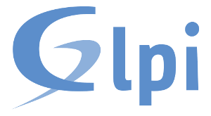
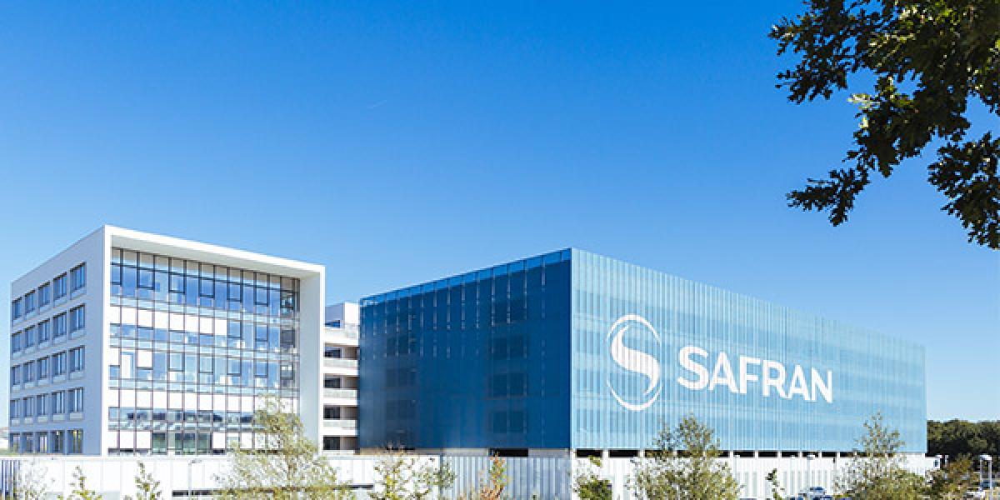

Bonjour, je suis
Matthias Vernichon
Étudiant en BTS SIO option SLAM
Actuellement en 2ème année de BTS SIO au lycée Ozenne. Ce portfolio présente les différents projets réalisés durant les deux années de BTS.
Mes Compétences
Les technologies que j'ai appris lors de ces deux années de BTS
Projets Scolaires (BTS)
Gestion de frais - GSB
Développement d'une application web pour la gestion des frais de déplacement d'une entreprise pharmaceutique fictive. Projet réalisé en première année de BTS.
![[Image of Website]](https://images.unsplash.com/photo-1460925895917-afdab827c52f?ixlib=rb-4.0.3&auto=format&fit=crop&w=600&q=80)
Réservation de salle - VALRES2
Conception d'une application web permetant de réserver des salles de réunions dans un établissement.
Site web Vitrine BTS SAM
Réalisation d'un site vitrine pour une entreprise de voyage fictive imaginée par un groupe d'étudiante de BTS SAM.

Mission 6 - GLPI
Gestion du patrimoine informatique d'une entreprise grâce à GLPI.
![[Image of Website]](images/GLPI serveur.jpg)
Procédure de création d'un serveur GLPI
Création et mise en place de GLPI sur un serveur Debian 11 et création d'une procédure d'installation.

Logiciel Python - Stage 1ère année
Conception et dévellopement d'un logiciel de controle de banc d'essai éléctrothermique pour l'entreprise Safran Electrical & Power durant mon stage de 1ère année.
Logiciel Python - Stage 2ère année
Reprise du logiciel dévelopé lors de mon premier stage afin de l'optimiser et d'améliorer l'interface. J'ai utilisé la POO afin de mieux séparer l'interface graphique de la partie "Contrôle" de l'application.
Projets Personnels
Bot discord
Bot discord qui récupère les messages d'un chat Twitch grâce à l'api de Twitch afin de citer les messages à haute voix grâce au TTS (text-to-speech).
Prêt à collaborer ?
N'hésitez pas à me contacter si vous avez des questions ou que vous voulez discuter de mes différents projets !